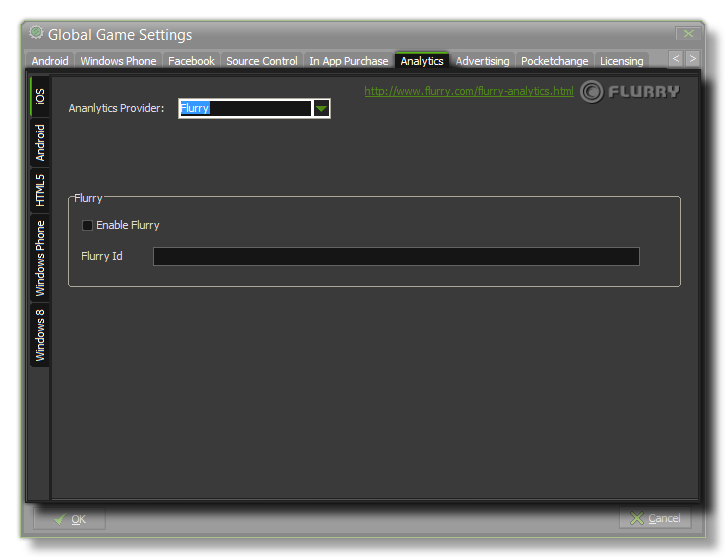

This tab permits you to add analytics to your game, permitting you to use certain third-party products to track your game and it's sales or plays. There are four sub-tabs for this, one for iOS, one Android one for HTML5
and a final one for Windows Phone.
For all available platforms you can specify whether to use Flurry Analytics or Google Analytics
to track your game, unless you are tarketing the Windows 8 (Native or JS) module, in which case you can only use MarkedUp Analytics . Due to the nature
of these functions, you can only have one active at a time, so make sure that you check the correct one! Once you have flagged the Enable Flurry, Enable Google Analytics or
Enable MarkedUp check-box for your analytics provider, you should also add the unique ID that you have been assigned into the appropriate area.
NOTE: This functionality is limited to the Professional Version of GameMaker:Studio and will depend on the target modules that you
have installed.